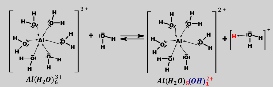
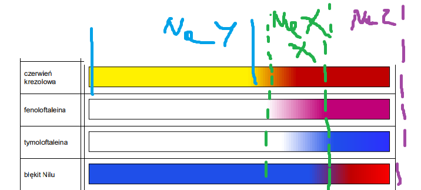
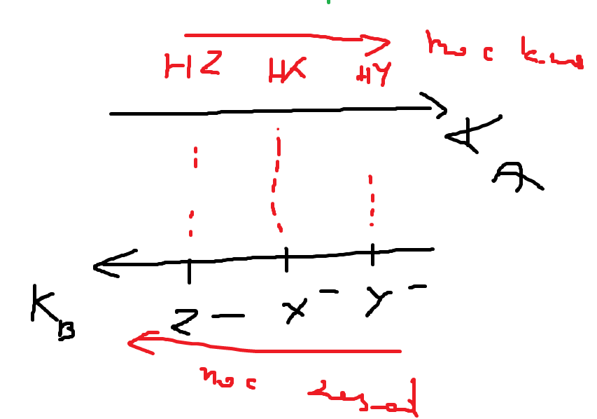

Dysocjacja to proces rozpadu soli; wodorosoli; hydroksyli oraz hydratów (i innych tego typu związków) na jony, z których dana substancja jest złożona.
\[CuSO_{4}·6H_{2}O \rightarrow Cu^{2 +} + SO_{4}^{2 -} + 6H_{2}O\]
Hydroliza –to nas reakcja powstałych po dysocjacji jonów oraz kwasów/ zasad z wodą ze zmianą pH
\[F^{-} + H_{2}O \rightleftarrows HF + OH^{-}\]
\[NH_{4}^{+} + H_{2}O \rightleftarrows H_{3}O^{+} + NH_{3}\]
\[HCl + H_{2}O \rightarrow H_{3}O^{+} + Cl^{-}\]
Reakcja ta zachodzi odwracalnie, jeżeli jony są słabymi kwasami/zasadami (czyli sprzężone są do słabych kwasów/zasad), natomiast nieodwracalnie jeżeli są silnymi kwasami/ zasadami (czyli sprzężone są do niekwasów/niezasad). Np. reakcja odwracalna hydrolizy występuje, jeżeli anion kwasu powstałego po dysocjacji soli jest sprzężony do słabego kwasu:
\[dysocjacja\ CH_{3}COONa \rightarrow CH_{3}COO^{-} + Na^{+}\]
\[hydroliza:CH_{3}COO^{-} + H_{2}O \rightleftarrows CH_{3}COOH + OH^{-}\]
Natomiast reakcja nieodwracalna hydrolizy występuje, jeżeli anion kwasu powstałego po dysocjacji soli jest sprzężony do substancji niekwasu – substancji, która nie ma właściwości kwasowych, w tym wypadku metanol:
\[dysocjacja:\ CH_{3}ONa \rightarrow \ \ CH_{3}O^{-} + Na^{+}\]
\[hydroliza:\ \ CH_{3}O^{-} + H_{2}O \rightarrow CH_{3}OH + OH^{-}\]
| Sól | Mocnego kwasu | Słabego kwasu | Niekwasu |
|---|---|---|---|
| Mocnej zasady |
\[dys:\ NaCl \rightarrow Na^{+} + Cl^{-}\] Hydrolizy brak (bo jon Na + pochodzi od mocnej zasady jaką jest NaOH więc Na + jest niekwasem, a jon Cl ‑ pochodzi od mocnego kwasu jakim jest HCl więc jon Cl ‑ jest niezasadą Oba jony nie hydrolizują, a więc odczyn roztworu jest obojętny albo inaczej sól ta nie ma wpływu na pH roztworu. |
\[dys:NaF \rightarrow Na^{+} + F^{-}\] Na + pochodzi od silnej zasady ( NaOH ), czyli nie hydrolizuje, ale F ‑ pochodzi od słabego kwasu ( HF ), więc jest słabą zasadą czyli hydrolizuje odwracalnie \[F^{-} + H_{2}O \rightleftarrows HF + OH^{-}\] Jest to hydroliza zasadowa/ anionowa, Odczyn jest zasadowy Oczywiście im silniejsza zasada , która powstała po dysocjacji (tu F - ) tym bardziej alkaliczny będzie odczyn roztworu; albo inaczej im z słabszego kwasu wychodzimy tym bardziej zasadowy jest odczyn. |
\[dys:CH_{3}OK \rightarrow CH_{3}O^{-} + K^{+}\] K + pochodzi od silnej zasady ( KOH ), czyli nie hydrolizuje, ale CH 3 O - pochodzi od niekwasu ( CH 3 OH ), więc jest silną zasadą czyli hydrolizuje całkowicie \[CH_{3}O^{-} + H_{2}O \rightarrow CH_{3}OH + OH^{-}\] Jest to hydroliza zasadowa/ anionowa, Odczyn jest zasadowy Z uwagi na całkowitą hydrolizę stężenie jonów OH ‑ jest zawsze równe stężeniu użytej soli. |
| Słabej zasady |
\[NH_{4}Cl \rightarrow NH_{4}^{+} + Cl^{-}\] Cl ‑ pochodzi od silnego kwasu ( HCl ), czyli nie hydrolizuje, natomiast NH 4 + pochodzi od słabej zasady ( NH 3 ), więc jest słabym kwasem – ulega więc hydrolizie odwracalnej: \[NH_{4}^{+} + H_{2}O \rightleftarrows H_{3}O^{+} + NH_{3}\] Jest to hydroliza kwasowa/ kationowa Odczyn roztworu kwaśny UWAGA jeszcze na kationy metali amfoterycznych, bo one też hydrolizują \[Al^{3 +} + H_{2}O \rightleftarrows Al(OH)^{2 +} + H^{+}\] \[Al^{3 +} + 2H_{2}O \rightleftarrows Al(OH)^{2 +} + H_{3}O^{+}\] I możliwe są dalsze etapy aż do wytrącenia wodorotlenku; natomiast najbardziej poprawnym opisem jest użycie akwakompleksów. Im silniejszy słaby kwas (a więc słabsza sprzężona zasada) tym bardziej kwaśny roztwór otrzymujemy |
\[NH_{4}F \rightarrow NH_{4}^{+} + F^{-}\] NH 4 + pochodzi od słabej zasady( NH 3 ), więc jest słabym kwasem czyli hydrolizuje odwracalnie w myśl reakcji: \[NH_{4}^{+} + H_{2}O \rightleftarrows H_{3}O^{+} + NH_{3}\] hydroliza kwasowa/ kationowa ale jon F ‑ pochodzi od słabego kwasu( HF ), więc jest słabą zasadą czyli hydrolizuje odwracalnie: \[F^{-} + H_{2}O \rightleftarrows HF + OH^{-}\] To się nazywa hydroliza zasadowa/ anionowa. Mamy więc dwa przeciwstawne procesy: O odczynie decyduje ten proces, który przeważa tzn. porównujemy wartości stałych kwasowej i zasadowej i patrzymy, która z nich ma większą wartość – ta decyduje o przeważającym procesie. |
Nie istnieje (rozkład do niekwasu i słabej zasady przed dodaniem wody) |
| niezasady |
Są to rzadkie, dość specyficzne układy, ich otrzymanie wymaga dodania silnego kwasu do związku, który nie ma właściwości zasadowych w wodzie. Przykładem jest chlorowodorek fosfiny PH 4 Cl (analog chlorku amonu NH 4 Cl ) Dysocjacja prowadzi do: \[PH_{4}Cl \rightarrow PH_{4}^{+} + Cl^{-}\] Kation fosfiny PH 4 + jest sprzężonym kwasem do fosforowodoru PH 3 , którego stała dysocjacji zasadowej wynosi K b PH3 =4⋅10 -28 , a więc znacznie mniej niż wartość graniczna 10 -14 , w związku z czym PH 3 , nie ma właściwości zasadowych (jest niezasadą) , a sprzężony kwas - PH 4 + jest silnym kwasem i hydrolizuje całkowicie w myśl reakcji \[PH_{4}^{+} + H_{2}O \rightarrow PH_{3} + H_{3}O^{+}\] Jon Cl ‑ pochodzi od mocnego kwasu jakim jest HCl więc jon Cl ‑ jest niezasadą Z uwagi na całkowitą hydrolizę stężenie jonów H + jest zawsze równe stężeniu użytej soli |
Nie istnieje (rozkład do słabego kwasu i niezasady przed dodaniem wody) | Nie istnieje (rozkład do niekwasu i niezasady przed dodaniem wody) |
*Kationy metali ( ogólnie jony) nie istnieją w wodzie same „gołe”, są otoczone cząsteczkami wody przyłączonymi do nich wiązania koordynacyjnymi. Można powiedzieć, że kationy takie są wstydliwe i otaczają się cząsteczkami wody, robiąc tzw. akwakompleksy, co omawialiśmy przy podstawach teorii Broesteada. Hydrolizują te akwakompleksy, odłączając/przyłączać wodory
\[pH = 1 \rightarrow H^{+} = 10^{- 1} = 0.1;\ \]

\[\left\lbrack Al\left( H_{2}O \right)_{6} \right\rbrack^{3 +} + H_{2}O < - \rightarrow \left\lbrack Al\left( H_{2}O \right)_{5}(OH) \right\rbrack^{2 +} + H_{3}O^{+}\]
– to jedna z dwóch metod określania odczynu (jakościowego) soli gdzie mamy dwie albo więcej przeciwstawnych hydroliz. Obecnie nie jest polecana, ale zdarza się na maturach. W celu określenia odczynu soli lub innego związku (lekko kwaśny/zasadowy), dla którego mamy przeciwstawne hydrolizy musimy zapisać reakcję zachodzących hydroliz dla jonów, z których dana sól jest zbudowana. Kolejno odnaleźć w tablicach lub obliczyć ich wartości stałych równowagi. Ostatnim krokiem jest znalezienie wartości stałej, która jest największa dla danej soli – ona decyduje o odczynie roztworu:
\[6.31 · 10^{- 4} = K_{a}^{HF}\ \ \text{oraz}\ 1.78 · 10–5 = K_{b}^{NH_{3}}\ \]
\[NH_{4}^{+} \rightleftarrows H^{+} + NH_{3}\ \ \ \ \ \ \ K_{a}^{NH_{4}^{+}} = \frac{K_{W}}{K_{b}^{NH_{3}}} = \mathbf{5.62·}\mathbf{10}^{\mathbf{- 10}}\]
\[F^{-} + H_{2}O \rightleftarrows HF + OH^{-}\ \ \ \ \ \ \ \ \ \ K_{b}^{F^{-}} = \frac{K_{W}}{K_{a}^{HF}} = \mathbf{1.58·}\mathbf{10}^{\mathbf{- 11}}\]
Czyli \(K_{a} > K_{B}\) czyli przeważa hydroliza kwasowa, a więc odczyn roztworu \(NH_{4}F\) będzie bardziej kwasowy
Opisaną metodą możemy też określać odczyn wodorosoli słabych kwasów oraz słabych zasad wieloprotonowych.
Np. określenie odczynu wodorofosforanu (V) potasu \(K_{2}HPO_{4}\) W pierwszym kroku zapisujemy dysocjację tego związku na jony z których jest on zbudowany:
\[K_{2}HPO_{4} \rightarrow 2K^{+} + HPO_{4}^{2 -}\]
Jon wodorofosforanowy \(HPO_{4}^{2 -}\) może być zarówno kwasem (oddać proton) jak i zasadą (przyjąć proton, jest on, więc jonem amfiprotycznym –takim, który może i oddać i przyjąć proton. Potrzebujemy wiedzieć, który proces przeważa, a więc zapisujemy wyrażenia na obie stałe równowagi:
\[HPO_{4}^{2 -} + H_{2}O \rightleftarrows H_{2}PO_{4}^{-} + OH^{-}\]
\[HPO_{4}^{2 -} + H_{2}O \rightleftarrows PO_{4}^{3 -} + H_{3}O^{+}\]
W tablicach CKE mamy kolejne stałe dysocjacji kwasu fosforowego wraz z wartościami:
\[H_{3}PO_{4} \rightleftarrows H^{+} + H_{2}PO_{4}^{-}\ \ \ \ \ \ \ \ \ K_{a1} = 6.92·10^{- 3}\]
\[\text{ }{\text{ }H}_{2}PO_{4}^{-} \rightleftarrows H^{+} + HPO_{4}^{2 -}\ \ \ \ \ \ \ K_{a2} = 6.17·10^{- 8}\]
\[\text{ }HPO_{4}^{2 -} \rightleftarrows H^{+} + PO_{4}^{3 -}\ \ \ \ \ \ \ \ \ \ \ K_{a3} = 4.79·10^{- 13}\]
Proces przyłączenia wodoru do \(HPO_{4}^{2 -}\) z utworzeniem jonu \(OH^{-}\) opisuje stała równowagi zasadowa, \(K_{b}\) . Obliczymy jej wartość używając drugiej stałej dysocjacji kwasowej, \(K_{a2}\) , gdyż ta stała mówi o równowadze pomiędzy dwoma interesującymi nas drobinami tzn. \(HPO_{4}^{2 -}\) i \({\text{ }H}_{2}PO_{4}^{-}\)
\[\text{ }HPO_{4}^{2 -} + H_{2}O \rightleftarrows H_{2}PO_{4}^{-} + OH^{-}\ \ \ \ \ \ \ K_{b} = \frac{K_{w}}{K_{a_{2}}} = \frac{10^{- 14}}{6.17·10^{- 8}} = 0.162·10^{- 6}\]
Proces odłączenia wodoru od \(HPO_{4}^{2 -}\) z utworzeniem jonu \(PO_{4}^{3 -}\) opisuje stała trzecia stała równowagi kwasowej:
\[HPO_{4}^{2 -} + H_{2}O \rightleftarrows PO_{4}^{3 -} + H_{3}O^{+}\ \ \ \ \ \ \ \ \ \ K_{a3} = 4.79·10^{- 13}\]
Porównując te stałe widzimy, że \(K_{b} > \ K_{a}\) . a więc odczyn roztworu będzie zasadowy
Jednym z bardziej skomplikowanych i podchwytliwych układów jest wodorosiarczek amonu – \(NH_{4}HS\) . Rozwazając jego dysocjację widzimy, iż zbudowany jest on z jonów amonowych \(NH_{4}^{+}\) i wodorosiarczkowych \(HS^{-}\) . Jon \(NH_{4}^{+}\) sprzężony jest do słabej zasady ( \(NH_{3}^{\ }\) ), a więc jest słabym kwasem. Jon \(HS^{-}\ \) jest amfiprotem, a więc może zarówno przyjąć jak i oddać proton. Zapisując te reakcje możemy odczytać oraz ustalić wartości ich stałych dysocjacji:
\[NH_{4}HS \rightarrow NH_{4}^{+} + HS^{-}\]
\[NH_{4}^{+} \rightleftarrows H^{+} + NH_{3}\ \ \ \ \ \ \ \ \ \ \ K_{a} = \frac{K_{W}}{K_{b}} = 5.62·10^{- 10}\]
\[HS^{-} \rightleftarrows H^{+} + S^{2 -}\ \ \ \ \ \ \ \ \ K_{a2} = 10^{- 19}\]
\[HS^{-} + H_{2}O \rightleftarrows H_{2}S + OH^{-}\ \ \ \ \ \ \ \ K_{b} = \frac{K_{w}}{K_{a}} = \frac{10^{- 14}}{8.91·10^{- 8}} = 0.112·10^{- 6}\]
Największą wartość wśród obliczonych stałych równowagi ma stała dysocjacji zasadowej \(K_{b}\ \) jonu \(HS^{-}\) czyli odczyn soli \(NH_{4}HS\) jest zasadowy.
Jednocześnie należy podkreślić, iż przedstawiona metoda, chociaż uniwersalna ma swoje mankamenty: jest dość powolna (wymaga często obliczenia wartości stałej zasadowej mając wartość stałej kwasowej lub odwrotnie) oraz daje pH tylko jakościowo tzn. czy roztwór jest kwasowy czy zasadowy, nie daje nawet około wartości pH). Istnieje omówiona dalej lepsza metoda przewidywania odczynu pH dla substancji amfiprotycznych.
Kolejnym typem zadań opierających się o pH są zadania oparte na posegregowaniu po rosnącym pH odczynu związków o ustalonym stężeniu. Zwykle w zadaniach maturalnych występują maksymalnie 4 różne związki.
Posegreguj po wzrastającym pH następujące sole i związki (stężenie wszystkich substancji jest identyczne i wynosi. 0.1 mol⋅dm -3 ):
\[Na_{2}SO_{4};HCOOK;NaOH;Ba(OH)_{2}CH_{3}COONa;\ NH_{4}F;\ \left( NH_{4} \right)_{2}SO_{4};NH_{4}Cl;NH_{4}Br;\ NaF;Na_{3}PO_{4};NH_{3};\]
\[H_{2}SO_{4};CH_{3}COOH;HCl;CH_{3}ONa;\ CH_{3}CH_{2}OH;PH_{4}Cl\]
Na początku najlepiej jest posegregować na grupy:
- mocne kwasy
sole mocnych kwasów i niezasad
Grupa całkowitej hydrolizy kwasowej
Całkowita dysocjacja kwasowa, czyli kwasy hydrolizują nieodwracalnie na jony \(H^{+}\) , a więc stężenie tych jonów jest mocno uzależnione od stężenia kwasu oraz ewentualnie dla mocnych kwasów wieloprotonowych ilości protonów . \(H^{+}\) w kwasie.
-słabe kwasy
-sole mocnych kwasów i słabych zasad
Grupa odwracalnej hydrolizy kwasowej.
Stężenie jonów \(H^{+}\) najbardziej od stałej dysocjacji kwasowej, kolejno od stężenia drobiny hydrolizującej
-Sole mocnych kwasów i mocnych zasad
- Związki niedysocjujące
-Sole słabych kwasów i słabych zasad
Metoda porównywania stałych kwasowej i zasadowej dla soli słabych kwasów i słabych zasadpoprostu \(pH\) obojętne dla soli mocnej zasady i mocnego kwasu
-Sole słabych kwasów i mocnych zasad
- słabe zasady
Grupa odwracalnej hydrolizy zasadowej.
Porównujemy stałą dysocjacji zasadowej i stężenie jonu hydrolizującego
- mocne zasady
- sole niekwasów i mocnych zasad
Całkowita dysocjacja zasadowa
Stężenie jonów \(OH^{}\ \) uzależnione tylko od stężenia hydrolizującej drobiny
Ogólnie należy uważać parami na grupy jednobarwne bo się mogą pomylić. Tam należy porównywać \(K_{a}\ i\ K_{B}\) , natomiast pomiedzy grupami to już sprawa jest prosta
- mocne kwasy
\[H_{2}SO_{4};HCl\]
sole mocnych kwasów i niezasad
\[PH_{4}Cl\]
-słabe kwasy
\[CH_{3}COOH\]
-Sole mocnych kwasów i słabych zasad
\[\left( NH_{4} \right)_{2}SO_{4}\]
\[NH_{4}Cl\]
\[NH_{4}Br;\]
- Związki niedysocjujące
\[CH_{3}CH_{2}OH\]
-Sole mocnych kwasów i mocnych zasad
\[Na_{2}SO_{4}\]
-Sole słabych kwasów i słabych zasad
\[NH_{4}F;\]
-Sole słabych kwasów i mocnych zasad
\[HCOOK\]
\[CH_{3}COONa\]
\[NaF\]
\[Na_{3}PO_{4}\]
- słabe zasady
\[NH_{3}\]
- mocne zasady
\[NaOH\]
\[Ba(OH)_{2}\]
- sole niekwasów i mocnych zasad
\[CH_{3}ONa\]
Są dwa czynniki, które mają wpływ w grupach hydrolizy odwracalnej mają znaczenie, która substancja jest bardziej kwasowa czy zasadowa. Pierwszorzędnym, ważniejszym czynnikiem dla procesów odwracalnych (grupy zółta zielona i niebieska), jest wartość stałej dysocjacji kwasowej \(K_{a}\ \) dla kwasów i zasadowej \(K_{b}\) dla hydrolizy zasadowej dla zasad. Im większa jest ta stała tym więcej jest jonów \(H^{+}\) bądź \(OH^{-}\) odpowiednio dla kwasów i zasad. Drugorzędnym czynnikiem, który należy rozpatrywać, dopiero po równaniu wartości stałych jest to stężenie drobiny hydrolizującej(a nie początkowe stężenie związku), tym bardzie roztwór odpowiednio bardziej kwaśny czy zasadowy. Oczywiście dla mocnych kwasów czy zasad, które hydrolizują jak wiemy całkowicie porównywanie stałych jest bez sensu, więc porównuję tylko ilość wodorów lub grup OH w danym związku. Oczywistym, więc jest to że 0.1 molowy \(H_{2}SO_{4}\) będzie bardziej kwaśny niż 0.1 molowy kwas \(HCl\) , bo \(H_{2}SO_{4}\) ma dwa wodory, a \(HCl\) ma jeden wodór kwaśny.
Wykorzystując powyższą informację mogę porównać grupę słabych zasad oraz soli mocnych zasad i słabych kwasów . Najpierw zapisujemy reakcję dysocjacji analizowanych soli na jony, a kolejno rozpatruję, który z tych jonów hydrolizuje dla związków będących soli słabych kwasów i mocnych zasad
\[HCOOK: \rightarrow HCOO^{-} + K^{+}\]
\[\ HCOO^{-} + H_{2}O \rightleftarrows HCOOH + OH^{-}\ \ \ \ \ K_{b} = \frac{K_{W}}{K_{a}} = \frac{10^{- 14}}{1.78·10^{- 4}} = 5.62·10^{- 11}\]
\[CH_{3}COONa \rightarrow CH_{3}COO^{-} + Na^{+}\]
\[\ CH_{3}COO^{-} + H_{2}O \rightleftarrows \ CH_{3}COOH + OH^{-}\ \ K_{b} = \frac{K_{W}}{K_{a}} = \frac{10^{- 14}}{1.75·10^{- 5}} = 5.62·10^{- 10}\]
\[NaF \rightarrow Na^{+} + F^{-}\]
\[\ F^{-} + \ H_{2}O \rightleftarrows HF + OH^{-}\ \ \ \ \ \ \ K_{b} = \frac{K_{W}}{K_{a}} = \frac{10^{- 14}}{6.31·10^{- 4}} = 1.58·10^{- 11}\ \]
\[Na_{3}PO_{4} \rightarrow 3Na^{+} + PO_{4}^{3 -}\]
\[Na_{3}PO_{4}:\ \ \ \ PO_{4}^{3 -} + H_{2}O \rightleftarrows HPO_{4}^{2 -} + OH^{-}\ \ \ \ \ \ \ \ \ K_{b} = \frac{K_{w}}{K_{a_{3}}} = \frac{10^{- 14}}{5.13·10^{- 13}} = 0.0195\]
Do obliczenia wartości stałej dysocjacji zasadowej używam wartości trzeciej stałej dysocjacji kwasowej, gdyż mówi ona o równowadze pomiędzy odpowiednimi jonami fosforanowymi ( \(HPO_{4}^{2 -}\) oraz \(PO_{4}^{3 -}\) ). W rozpatrywanej grupie jest tez amoniak ( \(NH_{3}\) ), ulega on odwracalnej hydrolizie zasadowej w myśl równania, wartość jego stałej dysocjacji zasadowej możemy odczytać z tablic:
\[NH_{3} + H_{2}O \rightleftarrows NH_{4}^{+} + \ OH^{-}\ \ \ \ \ ;K_{B} = 1.78·10^{- 5}\]
Kolejno związki te segregujemy wedle wzrastającej wartości stałej dysocjacji zasadowej \(K_{b}\) tzn. im większa wartość tej stałej tym większa jest ilość jonów \(OH^{-}\) , a więc tym bardziej wzrasta odczyn zasadowy i tym samym pH roztworu
\[\left( {najmniej\ zasadowe\ min}{pH} \right)NaF;\ HCOOK;\ CH_{3}COONa;NH_{3};\ Na_{3}PO_{4}\ (\text{najbardziej zasadowe max}\ pH)\]
W przypadku, w którym mamy te same wartości \(K_{A}\) lub \(K_{B}\) a drobiny hydrolizujące różnią się stężeniami grupujemy po stężeniach drobin hydrolizujących.
Natomiast dla mocnych zasad można powiedzieć, że im więcej jonów \(OH^{-}\) tym bardziej zasadowy roztwór.
\[pH\ :NaOH < Ba(OH)_{2}\]
Dla soli mocnych zasad i niekwasów rozważam dysocjacje i hydrolizę
\[CH_{3}ONa \rightarrow CH_{3}^{}O^{-} + Na^{+}\]
\[CH_{3}O^{-} + H_{2}O \rightarrow CH_{3}OH + OH^{-}\]
Wówczas widzę, że stężenie jonów \(OH^{-}\) będzie równe stężeniu użytego \(CH_{3}ONa\) , gdyż z jednego metanolanu mamy jeden jon \(OH^{-}\) . Grupując otrzymujemy:
\[NaOH \approx CH_{3}ONa < Ba(OH)_{2}\]
W przypadku grupy odwracalnej hydrolizy kwasowej ( grupy soli słabych zasad i mocnych kwasów oraz słabych kwasów ) należy najpierw wykorzystać stałą dysocjacji kwasowej, a w przypadku takich samych wartości stałych porównywać stężenia hydrolizujących jonów.
\[\left( NH_{4} \right)_{2}SO_{4} \rightarrow 2NH_{4}^{+} + SO_{4}^{2 -}\]
\[NH_{4}^{+} + H_{2}O \rightleftarrows NH_{3} + H_{3}O^{+}\]
\[NH_{4}Cl \rightarrow NH_{4}^{+} + Cl^{-}\]
\[NH_{4}^{+} + H_{2}O \rightleftarrows NH_{3} + H_{3}O^{+}\]
\[NH_{4}Br \rightarrow NH_{4}^{+} + Br^{-}\]
\[NH_{4}^{+} + H_{2}O \rightleftarrows NH_{3} + H_{3}O^{+}\]
\[CH_{3}COOH + H_{2}O \rightleftarrows CH_{3}COO^{-} + \ H_{3}O^{+}\]
W przypadku hydrolizy jonów amonowych reakcja hydrolizy, a więc i wartość stałej dysocjacji kwasowej jest taka sama \(K_{A}^{NH_{4}^{+}} = 0.562·10^{- 9}\) .
Natomiast dla kwasu octowego stała dysocjacji kwasowej tego związku jest równa \(K_{A}^{CH_{3}COOH\ } = 1.75·10^{- 5}.\) Porównując uzyskane wartości stałych,możemy powiedzieć, że roztwór kwasu octowego będzie kwaśniejszy niż roztwór zawierający jony amonowe, bo \(K_{A}^{CH_{3}COOH\ } > K_{A}^{NH_{4}^{+}}\) . Kolejno dokonujemy porównania związków zawierających ugrupowania amonowe, porównując stężenia jonów hydrolizujących dla wszystkich związków widzimy, iż stężenie jonu \(NH_{4}^{+}\) największe jest w \(\left( NH_{4} \right)_{2}SO_{4}\) niż w \(NH_{4}Br\) i \(NH_{4}Cl\) Możemy więc wyciągnąć wniosek, iż \(\left( NH_{4} \right)_{2}SO_{4}\) będzie bardziej kwasowe niż \(NH_{4}Br\) i \(NH_{4}Cl\) , \(\ \) bo ma większe stężenie hydrolizujących jonów. \(NH_{4}Br\) i \(NH_{4}Cl\) mają tą samą stałą i to samo stężenie, a więc ich odczyn również będzie taki sam. Segregując związki tej grupy dostajemy:
\[{CH_{3}COOH < \left( NH_{4} \right)}_{2}SO_{4} < NH_{4}Cl \approx NH_{4}Br\ \]
W „zielonej” grupie o odczynie około obojętnym i obojętnym używamy metody porównywania stałych dla soli słabych kwasów i słabych zasad, natomiast dla soli mocnych kwasów i mocnych zasad \(pH\) jest dokładnie obojętne
\[NH_{4}F \rightarrow NH_{4}^{+} + F^{-}\]
Oba jony ulegają hydrolizie w myśl równań:
\[NH_{4}^{+} \rightleftarrows H^{+} + NH_{3}\ \ \ \ \ \ \ K_{a} = \frac{K_{W}}{K_{b}} = \mathbf{5.62·}\mathbf{10}^{\mathbf{- 10}}\]
\[F^{-} + H_{2}O \rightleftarrows HF + OH^{-}\ \ \ \ \ \ \ \ \ \ K_{b} = \frac{K_{W}}{K_{a}} = \mathbf{1.58·}\mathbf{10}^{\mathbf{- 11}}\]
Czyli dla tego związku \(K_{A} > K_{B}\) ,więc \(NH_{4}F\) ma większe właściwości kwasowe niż zasadowe, a więc jego \(pH\) będzie poniżej obojętnego. \(Na_{2}SO_{4}\ \) jest solą mocnego kwasu i mocnej zasady, a więc jony powstałe po dysocjacji tego związku nie będą hydrolizować, więc \(pH\) roztworu tego związku będzie obojętne. Etanol natomiast jest związkiem niedysocjującym, a więc również \(pH\) tego związku będzie obojętne
\[NH_{4}F;Na_{2}SO_{4} \approx CH_{3}CH_{2}OH\]
Łącząc wszystkie grupy otrzymujemy:
\[\text{ }H_{2}SO_{4};HCl \approx PH_{4}Cl;CH_{3}COOH;\ \ \left( NH_{4} \right)_{2}SO_{4};NH_{4}Cl\text{ / }NH_{4}Br;NH_{4}F;Na_{2}SO_{4} \approx CH_{3}CH_{2}OH;NaF;\ HCOOK;\ CH_{3}COONa;NH_{3};\ Na_{3}PO_{4}\ ;NaOH \approx CH_{3}ONa < Ba(OH)_{2}\]
Zadanie z gatunku soli i kolorków.
Mamy 3 sole trzech różnych kwasów \(NaX,\ NaY,\ KZ\) o jednakowych stężeniach. Wiadomo, że roztwór soli kwasu \(NaX\) jest różowy w obecności fenoloftaleiny i niebieski obecności błękitu Nilu; roztwór soli \(NaY\) jest żółty w obecności czerwieni krezolowej, a roztwór \(KZ\) jest czerwony w obecności błękitu Nilu.
Posegreguj kwasy wedle wzrastającej mocy. \(HX,\ \ HY,\ \ HZ.\)

Tutaj wszystkie kationy są kationami pochodzącymi od mocnych zasad, a więc nie hydrolizują. \(pH\) determinowane jest tylko przez zasadowe właściwości reszta kwasowa. Im większe \(pH\) tym silniejsza (bardziej zachodzi) hydroliza zasadowa, a więc tym silniejsza zasada. Moc zasad rośnie w kolejności \(Y^{-},\ X^{-},\ Z^{-}\) tak jak \(pH\) soli. A im silniejsza zasada, tym słabszy sprzężony kwas:

Im bardziej kwaśny kwas (mocniejszy) tym słabsza sprzezona zasada
Więc moc kwasów rośnie odwrotnie do mocy zasad: \(HY,\ HX,\ HZ.\)